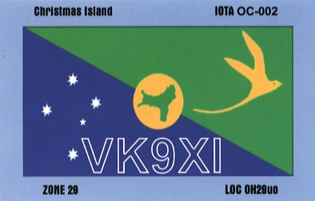
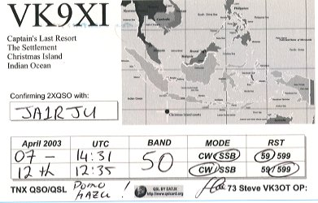

|
◎ VK9XI(Christmas Is)＝From VK3OT/VK3SIX(26.Apr.2003)
◎First QSOs with DXCC Entity - 6m
DXCC QSOs CONF. CALLSIGN DATE TIME GRID KM +/-
-------------------------------------------------------------------------------------
4P-4S (Sri Lanka) 1 0 4S7EA 19/04/2003 06:10 MJ96 3500
4X, 4Z (Israel) 9 0 4X1IF 11/04/2003 14:00 KM72 8867
5B (Cyprus) 10 0 5B4FL 11/04/2003 13:22 KM64TV 9078
9A (Croatia) 21 0 9A8A 14/04/2003 14:48 JN86EH 10787
9H (Malta) 28 0 9H1PA 13/04/2003 14:26 JM75 10733
BV (Taiwan) 7 0 BV2DP 07/04/2003 14:18 PL05 4324
BY,BT (China) 11 0 BG9BA 07/04/2003 14:16 OM44 5005
DU-DZ (Philippines) 9 0 N7ET/DU7 09/04/2003 12:56 PJ19 2928
EA-EH (Spain) 1 0 EH7KW 14/04/2003 15:34 IM67XI 12620 *
ER (Moldovia) 1 0 ER5AA 14/04/2003 15:09 KN45 9812
F (France) 1 0 F8OP 16/04/2003 13:26 JN26 11655
HL (South Korea) 15 0 6K2BTX 07/04/2003 14:20 PM37 5771
I (Italy) 21 0 IT9IPQ 13/04/2003 14:09 JM78 10779
IS, IM (Sardinia) 1 0 IS0GQX 14/04/2003 15:37 JM49OH 11290
JA-JS (Japan) 894 0 JE6DOI 07/04/2003 11:45 PM53 5569
JD1 (Ogasawara) 2 0 JD1AMA 19/04/2003 12:34 QL17 5824
JY (Jordan) 4 0 JY9NX 11/04/2003 13:19 KM71WW 8772
KH2 (Guam) 1 0 KG6DX 19/04/2003 11:34 QK23 5088
LZ (Bulgaria) 47 0 LZ2BF 13/04/2003 15:06 ?
SV-SZ (Greece) 16 0 SV1DH 11/04/2003 13:49 KM18 10095
T9 (Bosnia-Herzegovina) 1 0 YU4CM 17/04/2003 14:06 ?
UN-UQ (Kazakhstan) 1 0 UN7QX 13/04/2003 13:56 MN83 6658
UR-UZ, EM-EO (Ukraine) 1 0 UT3UY 16/04/2003 13:35 KO50 9838
VK (Australia) 3 0 VK8MS 15/04/2003 08:48 PH57KP 2750
VQ9 (Chagos Is.) 3 0 VQ9LA 18/04/2003 09:35 MI62 3600
VS6, VR2 (Hong Kong) 22 0 VR2KW 07/04/2003 12:48 OL72 3798
VU (India) 4 0 VU2MKP 14/04/2003 15:15 MK82 4062
YA (Afghanistan) 2 0 YA4F 07/04/2003 14:10 MM44OW 6335
YB-YH (Indonesia) 3 0 YB5QZ 13/04/2003 15:02 OJ00 1319**
YO-YR (Romania) 13 0 YO3ZR 14/04/2003 14:27 KN34 9932
YT-YU, YZ (Yugoslavia) 43 0 YT1VP 14/04/2003 15:36 JN94 10551
Z3 (Macedonia) 7 0 Z32ZM 13/04/2003 14:53 KN02 10352
-------------------------------------------------------------------------------------
Total: 32 1203 0
Notes: Both DL QSOs have been deleted from log
* Best distance
** Closest QSO
|